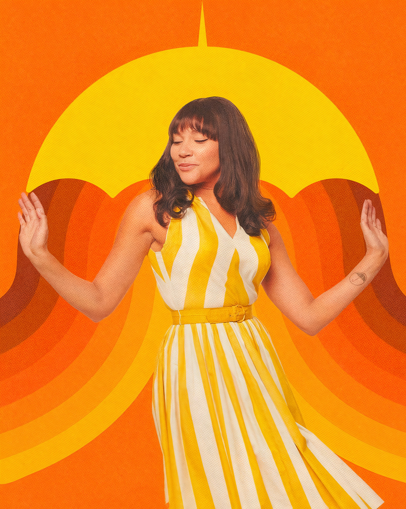
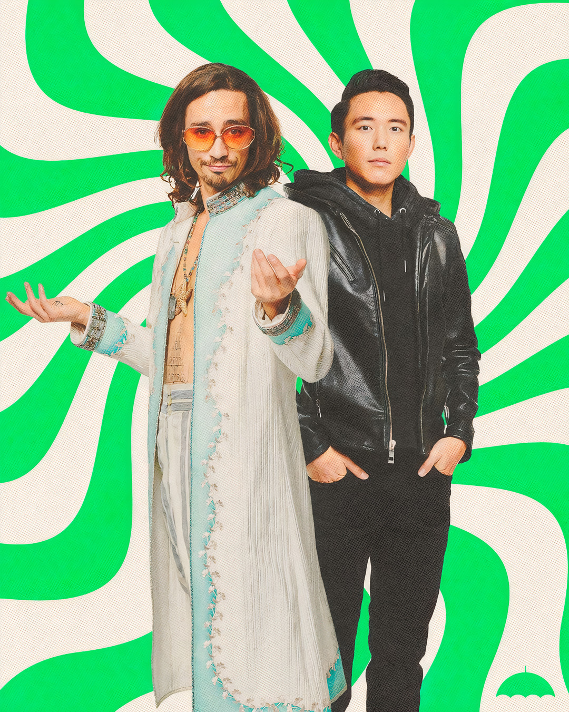

 Conocida como The Rumour (en español: El Rumor), el personaje a cargo de Emmy Raver-Lampman, es una súper estrella del mundo del cine que tiene el poder de cambiar la realidad y lo que piensa una persona con tan solo decir una mentira.En la serie podemos ver en acción su poder muy pocas veces, ya que, después de un problemático episodio familiar, es ella misma quien se auto prohíbe usarlo.Es un personaje vital en la trama, sobre todo por la extraña relación pseudo amorosa que mantiene con Luther desde su niñez, y por su relación con Vanya, al intentar incluirla en las dinámicas familiares.Tras abandonar la casa de su infancia, continúa viviendo de la fama, se casa y tiene una hija. Pero para cuando regresa para el entierro de su padre, su matrimonio ha acabado en divorcio al enterarse su marido de que Allison usaba su poder sobre él y su hija.Por lo que además ha perdido la custodia de su hija, al considerarse abuso de menores. Trata de mantenerse distante de sus hermanos, especialmente de Luther, avergonzada por lo sucedido con su matrimonio. Trata de hacer las paces con su pasado, primero con Luther y luego con Vanya, ya que de niñas mantenían una relación estrecha. Arrepentida por alejarse de Vanya, trata de volver a acercarse a ella, pero el extraño comportamiento de su hermana menor acaba por alarmarse.Comienza a seguirla hasta ser descubierta por su hermana, que usa sus poderes para cortarle la garganta con la cuerda del arco de su violín. Aunque es salvada por sus hermanos y Pogo (el chimpancé mayordomo), sus cuerdas vocales resultan dañadas, por lo que ha perdido su poder, al menos temporalmente. Esto no la impide luchar con sus hermanos por salvar a Vanya y al mundo.
KLAUS Y BEN 
Enigmático, drogadicto y profundamente dañado, el personaje de Klaus es uno de los más graciosos y que más evoluciona a lo largo de la historia. Su habilidad es, como podemos ver desde el primer capítulo, la de comunicarse con los muertos y (SPOILER), en los últimos capítulos, incluso invocarlos.Eso sí, para alcanzar la máxima plenitud de sus poderes debe estar completamente sobrio, lo que es algo realmente difícil para este perturbado personaje.Ojo que junto a Número 5 es uno de los pocos miembros que logra viajar en el tiempo sin la ayuda de nadie.Es encarnado por Robert Sheehan, el actor irlandés que interpretó el papel de Nathan Young en la serie Misfits, por el que fue nominado a un premio BAFTA en 2010.Poco se sabe en la serie sobre Ben, que por sus oscuros poderes es conocido como The Horror (en español: el horror) porque dentro de él viven aterradores y sanguinarios monstruos.Ben en la historia murió algunos años después de que Número 5 decidiera viajar por el tiempo. Un error durante una misión, que nunca llegamos a saber, provocó la muerte del más temido de los hermanos Hargreeves..Es Klaus, gracias a sus poderes, el único que puede verlo y comunicarse constantemente con él. De hecho, en el último episodio de la temporada, logran hacer un gran equipo.